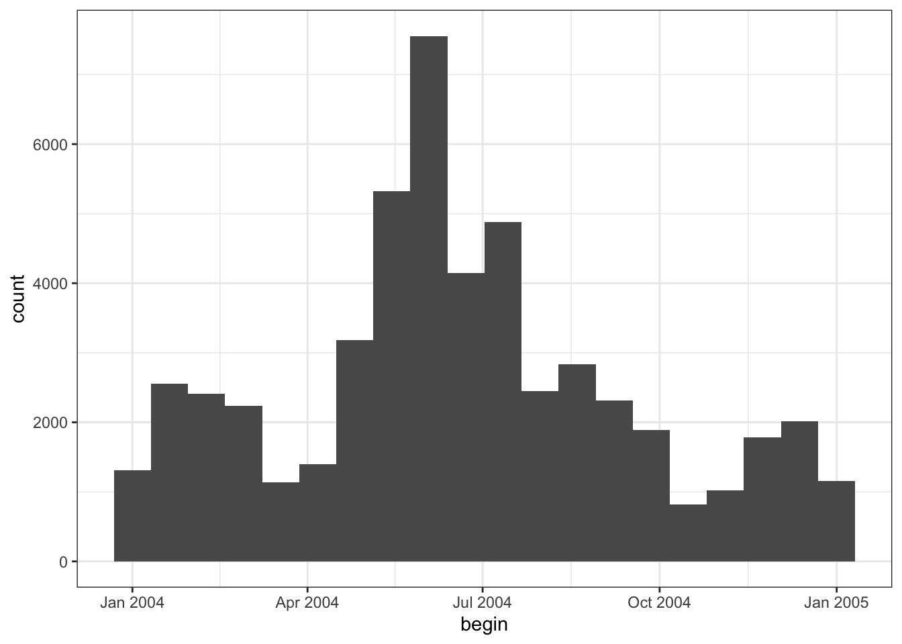
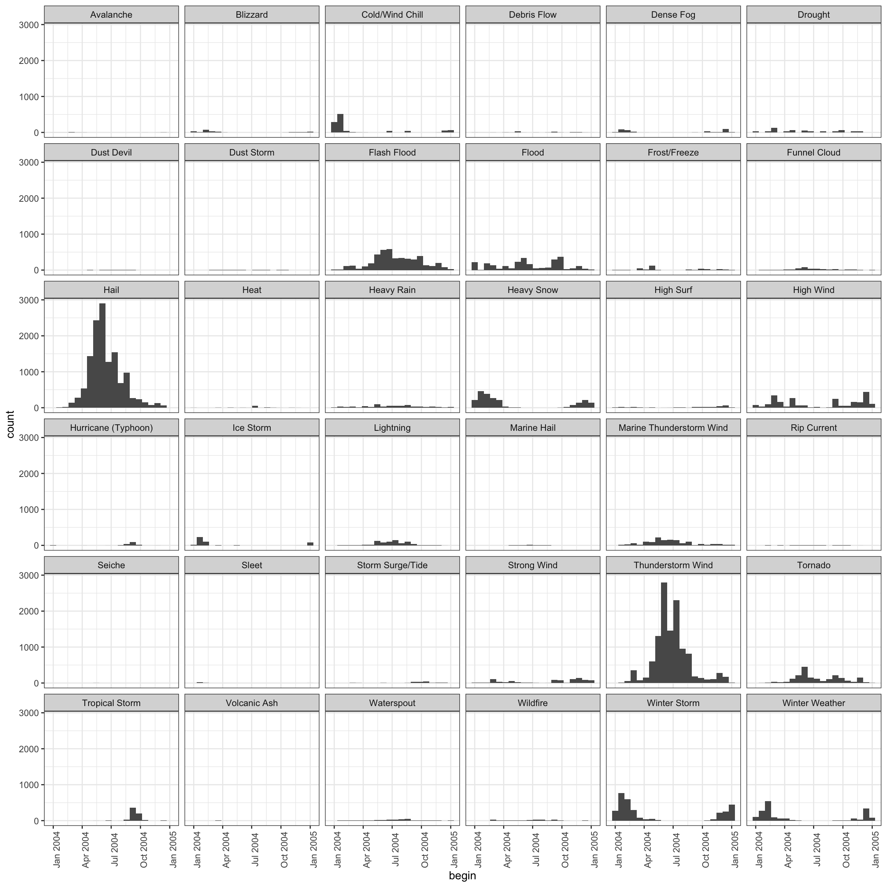
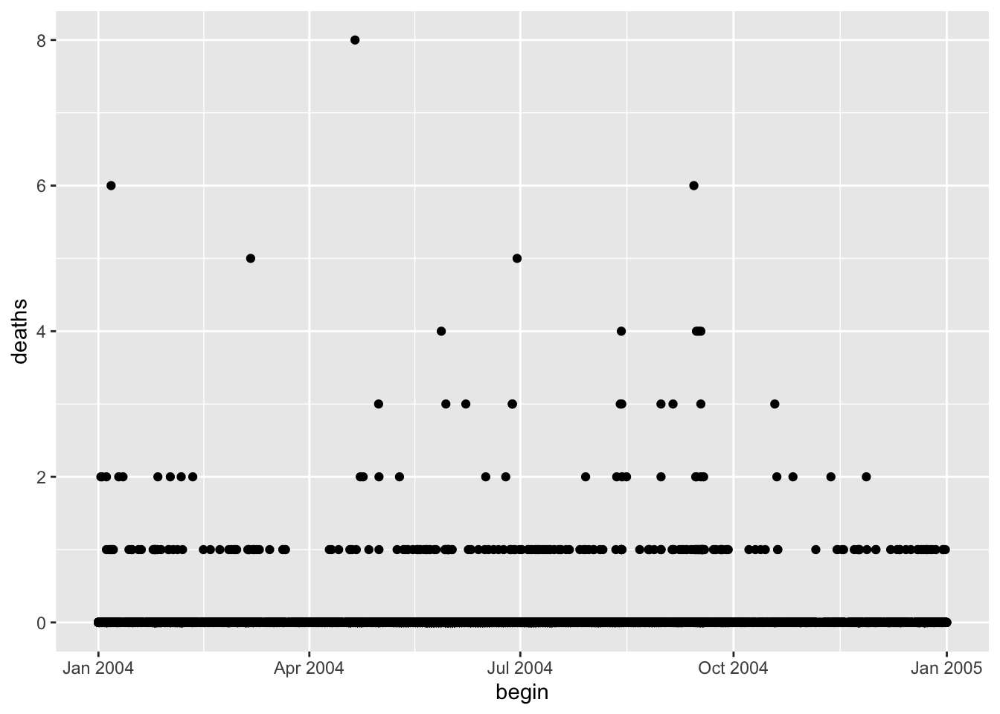
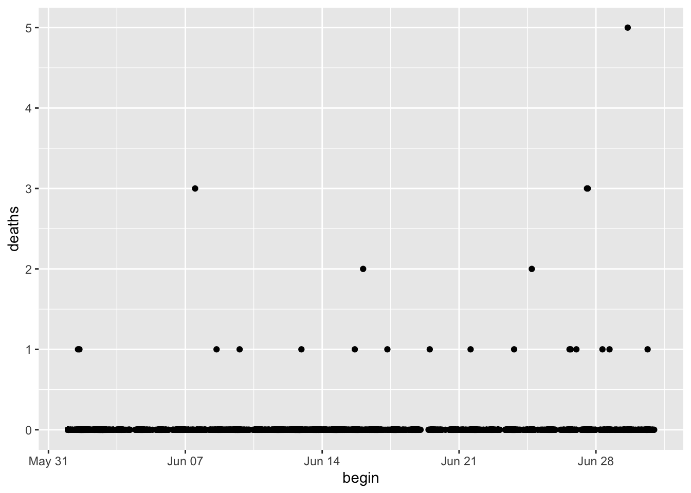
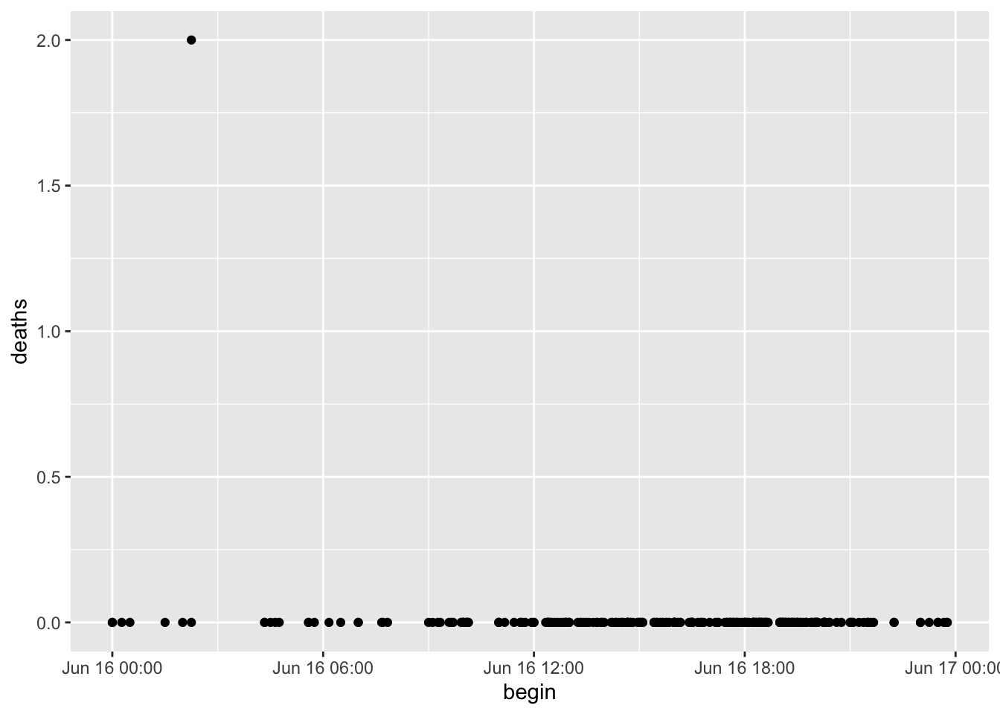

install.packages("lubridate")This lecture, as the rest of the course, is adapted from the version Stephanie C. Hicks designed and maintained in 2021 and 2022. Check the recent changes to this file through the GitHub history.
Pre-lecture materials
Read ahead
NoteRead ahead
Before class, you can prepare by reading the following materials:
Acknowledgements
Material for this lecture was borrowed and adopted from
Learning objectives
NoteLearning objectives
At the end of this lesson you will:
- Recognize the
Date,POSIXctandPOSIXltclass types in R to represent dates and times - Learn how to create date and time objects in R using functions from the
lubridatepackage - Learn how dealing with time zones can be frustrating 🙀 but hopefully less so after today’s lecture 😺
- Learn how to perform arithmetic operations on dates and times
- Learn how plotting systems in R “know” about dates and times to appropriately handle axis labels
Introduction
In this lesson, we will learn how to work with dates and times in R. These may seem simple as you use them all of the time in your day-to-day life, but the more you work with them, the more complicated they seem to get.
Dates and times are hard to work with because they have to reconcile two physical phenomena
- The rotation of the Earth and its orbit around the sun AND
- A whole raft of geopolitical phenomena including months, time zones, and daylight savings time (DST)
This lesson will not teach you every last detail about dates and times, but it will give you a solid grounding of practical skills that will help you with common data analysis challenges.
TipClasses for dates and times in R
R has developed a special representation of dates and times
- Dates are represented by the
Dateclass - Times are represented by the
POSIXctor thePOSIXltclass
TipImportant point in time
- Dates are stored internally as the number of days since 1970-01-01
- Times are stored internally as the number of seconds since 1970-01-01
In computing, Unix time (also known as Epoch time, Posix time, seconds since the Epoch, Unix timestamp, or UNIX Epoch time) is a system for describing a point in time.
It is the number of seconds that have elapsed since the Unix epoch, excluding leap seconds. The Unix epoch is 00:00:00 UTC on 1 January 1970.
Unix time originally appeared as the system time of Unix, but is now used widely in computing, for example by filesystems; some Python language library functions handle Unix time.[4]
The lubridate package
Here, we will focus on the lubridate R package, which makes it easier to work with dates and times in R.
TipPro-tip
Check out the lubridate cheat sheet at https://lubridate.tidyverse.org
A few things to note about it:
- It largely replaces the default date/time functions in base R
- It contains methods for date/time arithmetic
- It handles time zones, leap year, leap seconds, etc.
 [Source: Artwork by Allison Horst]
[Source: Artwork by Allison Horst]
lubridate is installed when you install tidyverse, but it is not loaded when you load tidyverse. Alternatively, you can install it separately.
library("tidyverse")
library("lubridate")Creating date/times
There are three types of date/time data that refer to an instant in time:
- A date. Tibbles print this as
<date>. - A time within a day. Tibbles print this as
<time>. - A date-time is a date plus a time: it uniquely identifies an instant in time (typically to the nearest second). Tibbles print this as
<dttm>. Elsewhere in R these are calledPOSIXct.
TipNote
We will focus on dates and date-times as R does not have a native class for storing times.
If you to work with only times, you can use the hms package.
You should always use the simplest possible data type that works for your needs.
That means if you can use a date instead of a date-time, you should.
Date-times are substantially more complicated because of the need to handle time zones, which we will come back to at the end of the lesson.
To get the current date or date-time you can use today() or now() from lubridate:
## lubridate versions
today()[1] "2023-10-02"now()[1] "2023-10-02 20:28:00 EDT"## base R versions
base::Sys.Date()[1] "2023-10-02"base::Sys.time()[1] "2023-10-02 20:28:00 EDT"Otherwise, there are three ways you are likely to create a date/time:
TipTypical ways to create a date/time in R
- From a string
- From individual date-time components
- From an existing date/time object
They work as follows.
1. From a string
Dates are of the Date class.
x <- today()
class(x)[1] "Date"Dates can be coerced from a character strings using some helper functions from lubridate. They automatically work out the format once you specify the order of the component.
To use the helper functions, identify the order in which year, month, and day appear in your dates, then arrange “y”, “m”, and “d” in the same order.
That gives you the name of the lubridate function that will parse your date. For example:
ymd("1970-01-01")[1] "1970-01-01"ymd("2017-01-31")[1] "2017-01-31"mdy("January 31st, 2017")[1] "2017-01-31"dmy("31-Jan-2017")[1] "2017-01-31"## Base R versions
as.Date("1970-01-01")[1] "1970-01-01"## Quickly becomes more complicated.
## We quickly need to get familiarized with
## formats for specifying dates, and that's complicated.
# ?strptime
as.Date("January 31st, 2017", "%B %dst, %Y")[1] "2017-01-31"as.Date(gsub("st,", "", "January 31st, 2017"), "%B %d %Y")[1] "2017-01-31"
TipPro-tip
- When reading in data with
read_csv(), you may need to read in as character first and then convert to date/time Dateobjects have their own specialprint()methods that will always format as “YYYY-MM-DD”- These functions also take unquoted numbers.
ymd(20170131)[1] "2017-01-31"Alternate Formulations
Different locales have different ways of formatting dates
ymd("2016-09-13") ## International standard[1] "2016-09-13"ymd("2016/09/13") ## Just figure it out[1] "2016-09-13"mdy("09-13-2016") ## Mostly U.S.[1] "2016-09-13"dmy("13-09-2016") ## Europe[1] "2016-09-13"All of the above are valid and lead to the exact same object.
Even if the individual dates are formatted differently, ymd() can usually figure it out.
x <- c(
"2016-04-05",
"2016/05/06",
"2016,10,4"
)
ymd(x)[1] "2016-04-05" "2016-05-06" "2016-10-04"Cool right?
2. From individual date-time components
Sometimes the date components will come across multiple columns in a dataset.
library("nycflights13")
flights %>%
select(year, month, day)# A tibble: 336,776 × 3
year month day
<int> <int> <int>
1 2013 1 1
2 2013 1 1
3 2013 1 1
4 2013 1 1
5 2013 1 1
6 2013 1 1
7 2013 1 1
8 2013 1 1
9 2013 1 1
10 2013 1 1
# ℹ 336,766 more rowsTo create a date/time from this sort of input, use
make_date(year, month, day)for dates, ormake_datetime(year, month, day, hour, min, sec, tz)for date-times
We combine these functions inside of mutate to add a new column to our dataset:
flights %>%
select(year, month, day) %>%
mutate(departure = make_date(year, month, day))# A tibble: 336,776 × 4
year month day departure
<int> <int> <int> <date>
1 2013 1 1 2013-01-01
2 2013 1 1 2013-01-01
3 2013 1 1 2013-01-01
4 2013 1 1 2013-01-01
5 2013 1 1 2013-01-01
6 2013 1 1 2013-01-01
7 2013 1 1 2013-01-01
8 2013 1 1 2013-01-01
9 2013 1 1 2013-01-01
10 2013 1 1 2013-01-01
# ℹ 336,766 more rows
NoteQuestions
The flights also contains a hour and minute column.
flights %>%
select(year, month, day, hour, minute)# A tibble: 336,776 × 5
year month day hour minute
<int> <int> <int> <dbl> <dbl>
1 2013 1 1 5 15
2 2013 1 1 5 29
3 2013 1 1 5 40
4 2013 1 1 5 45
5 2013 1 1 6 0
6 2013 1 1 5 58
7 2013 1 1 6 0
8 2013 1 1 6 0
9 2013 1 1 6 0
10 2013 1 1 6 0
# ℹ 336,766 more rowsLet’s use make_datetime() to create a date-time column called departure:
# try it yourself3. From other types
You may want to switch between a date-time and a date.
That is the job of as_datetime() and as_date():
today()[1] "2023-10-02"as_datetime(today())[1] "2023-10-02 UTC"now()[1] "2023-10-02 20:28:01 EDT"as_date(now())[1] "2023-10-02"Date-Times in R
From a string
ymd() and friends create dates.
To create a date-time from a character string, add an underscore and one or more of “h”, “m”, and “s” to the name of the parsing function:
Times can be coerced from a character string with ymd_hms()
ymd_hms("2017-01-31 20:11:59")[1] "2017-01-31 20:11:59 UTC"mdy_hm("01/31/2017 08:01")[1] "2017-01-31 08:01:00 UTC"You can also force the creation of a date-time from a date by supplying a timezone:
ymd_hms("2016-09-13 14:00:00")[1] "2016-09-13 14:00:00 UTC"ymd_hms("2016-09-13 14:00:00", tz = "America/New_York")[1] "2016-09-13 14:00:00 EDT"ymd_hms("2016-09-13 14:00:00", tz = "")[1] "2016-09-13 14:00:00 EDT"POSIXct or the POSIXlt class
Let’s get into some hairy details about date-times. Date-times are represented using the POSIXct or the POSIXlt class in R. What are these things?
POSIXct
POSIXct is just a very large integer under the hood. It is a useful class when you want to store times in something like a data frame.
Technically, the POSIXct class represents the number of seconds since 1 January 1970. (In case you were wondering, “POSIXct” stands for “Portable Operating System Interface”, calendar time.)
x <- ymd_hm("1970-01-01 01:00")
class(x)[1] "POSIXct" "POSIXt" unclass(x)[1] 3600
attr(,"tzone")
[1] "UTC"typeof(x)[1] "double"attributes(x)$class
[1] "POSIXct" "POSIXt"
$tzone
[1] "UTC"POSIXlt
POSIXlt is a list underneath and it stores a bunch of other useful information like the day of the week, day of the year, month, day of the month
y <- as.POSIXlt(x)
y[1] "1970-01-01 01:00:00 UTC"typeof(y)[1] "list"attributes(y)$names
[1] "sec" "min" "hour" "mday" "mon" "year" "wday" "yday"
[9] "isdst" "zone" "gmtoff"
$class
[1] "POSIXlt" "POSIXt"
$tzone
[1] "UTC"
$balanced
[1] TRUE
TipPro-tip
POSIXlts are rare inside the tidyverse. They do crop up in base R, because they are needed to extract specific components of a date, like the year or month.
Since lubridate provides helpers for you to do this instead, you do not really need them imho.
POSIXct’s are always easier to work with, so if you find you have a POSIXlt, you should always convert it to a regular data time lubridate::as_datetime().
Time Zones!
Time zones were created to make your data analyses more difficult as a data analyst.
Here are a few fun things to think about:
ymd_hms()function will by default use Coordinated Universal Time (UTC) as the time zone. UTC is the primary time standard by which the world regulates clocks and time.
You can go to Wikipedia to find the list of time zones
- Specifying
tz = ""in one of theymd()and friends functions will use the local time zone
x <- ymd_hm("1970-01-01 01:00", tz = "")
x[1] "1970-01-01 01:00:00 EST"attributes(x)$class
[1] "POSIXct" "POSIXt"
$tzone
[1] ""
TipPro-tip
The tzone attribute is optional. It controls how the time is printed, not what absolute time it refers to.
attr(x, "tzone") <- "US/Pacific"
x[1] "1969-12-31 22:00:00 PST"attr(x, "tzone") <- "US/Eastern"
x[1] "1970-01-01 01:00:00 EST"A few other fun things to think about related to time zones:
Almost always better to specify time zone when possible to avoid ambiguity
Daylight savings time (DST)
Some states are in two time zones
Southern hemisphere is opposite
Operations on Dates and Times
Arithmetic
You can add and subtract dates and times.
x <- ymd("2012-01-01", tz = "") ## Midnight
y <- dmy_hms("9 Jan 2011 11:34:21", tz = "")
x - y ## this worksTime difference of 356.5178 daysYou can do comparisons too (i.e. >, <, and ==)
x < y ## this works[1] FALSEx > y ## this works[1] TRUEx == y ## this works[1] FALSEx + y ## what??? why does this not work?Error in `+.POSIXt`(x, y): binary '+' is not defined for "POSIXt" objects
TipNote
The class of x is POSIXct.
class(x)[1] "POSIXct" "POSIXt" POSIXct objects are a measure of seconds from an origin, usually the UNIX epoch (1st Jan 1970).
Just add the requisite number of seconds to the object:
x + 3 * 60 * 60 # add 3 hours[1] "2012-01-01 03:00:00 EST"Same goes for days. For example, you can just keep the date portion using date():
y <- date(y)
y[1] "2011-01-09"And then add a number to the date (in this case 1 day)
y + 1[1] "2011-01-10"Cool eh?
Leaps and Bounds
Even keeps track of leap years, leap seconds, daylight savings, and time zones.
Leap years
x <- ymd("2012-03-01")
y <- ymd("2012-02-28")
x - yTime difference of 2 daysNot a leap year
x <- ymd("2013-03-01")
y <- ymd("2013-02-28")
x - yTime difference of 1 daysBUT beware of time zones!
x <- ymd_hms("2012-10-25 01:00:00", tz = "")
y <- ymd_hms("2012-10-25 05:00:00", tz = "GMT")
y - xTime difference of 0 secsThere are also things called leap seconds.
.leap.seconds [1] "1972-07-01 GMT" "1973-01-01 GMT" "1974-01-01 GMT" "1975-01-01 GMT"
[5] "1976-01-01 GMT" "1977-01-01 GMT" "1978-01-01 GMT" "1979-01-01 GMT"
[9] "1980-01-01 GMT" "1981-07-01 GMT" "1982-07-01 GMT" "1983-07-01 GMT"
[13] "1985-07-01 GMT" "1988-01-01 GMT" "1990-01-01 GMT" "1991-01-01 GMT"
[17] "1992-07-01 GMT" "1993-07-01 GMT" "1994-07-01 GMT" "1996-01-01 GMT"
[21] "1997-07-01 GMT" "1999-01-01 GMT" "2006-01-01 GMT" "2009-01-01 GMT"
[25] "2012-07-01 GMT" "2015-07-01 GMT" "2017-01-01 GMT"Extracting Elements of Dates/Times
There are a set of helper functions in lubridate that can extract sub-elements of dates/times
Date Elements
x <- ymd_hms(c(
"2012-10-25 01:13:46",
"2015-04-23 15:11:23"
), tz = "")
year(x)[1] 2012 2015month(x)[1] 10 4day(x)[1] 25 23weekdays(x)[1] "Thursday" "Thursday"Time Elements
x <- ymd_hms(c(
"2012-10-25 01:13:46",
"2015-04-23 15:11:23"
), tz = "")
minute(x)[1] 13 11second(x)[1] 46 23hour(x)[1] 1 15week(x)[1] 43 17Visualizing Dates
Reading in the Data
library(here)
library(readr)
storm <- read_csv(here("data", "storms_2004.csv.gz"), progress = FALSE)
storm# A tibble: 52,409 × 51
BEGIN_YEARMONTH BEGIN_DAY BEGIN_TIME END_YEARMONTH END_DAY END_TIME
<dbl> <dbl> <dbl> <dbl> <dbl> <dbl>
1 200412 29 1800 200412 30 1200
2 200412 29 1800 200412 30 1200
3 200412 8 1800 200412 8 1800
4 200412 19 1500 200412 19 1700
5 200412 14 600 200412 14 800
6 200412 21 400 200412 21 800
7 200412 21 400 200412 21 800
8 200412 26 1500 200412 27 800
9 200412 26 1500 200412 27 800
10 200412 11 800 200412 11 1300
# ℹ 52,399 more rows
# ℹ 45 more variables: EPISODE_ID <dbl>, EVENT_ID <dbl>, STATE <chr>,
# STATE_FIPS <dbl>, YEAR <dbl>, MONTH_NAME <chr>, EVENT_TYPE <chr>,
# CZ_TYPE <chr>, CZ_FIPS <dbl>, CZ_NAME <chr>, WFO <chr>,
# BEGIN_DATE_TIME <chr>, CZ_TIMEZONE <chr>, END_DATE_TIME <chr>,
# INJURIES_DIRECT <dbl>, INJURIES_INDIRECT <dbl>, DEATHS_DIRECT <dbl>,
# DEATHS_INDIRECT <dbl>, DAMAGE_PROPERTY <chr>, DAMAGE_CROPS <chr>, …names(storm) [1] "BEGIN_YEARMONTH" "BEGIN_DAY" "BEGIN_TIME"
[4] "END_YEARMONTH" "END_DAY" "END_TIME"
[7] "EPISODE_ID" "EVENT_ID" "STATE"
[10] "STATE_FIPS" "YEAR" "MONTH_NAME"
[13] "EVENT_TYPE" "CZ_TYPE" "CZ_FIPS"
[16] "CZ_NAME" "WFO" "BEGIN_DATE_TIME"
[19] "CZ_TIMEZONE" "END_DATE_TIME" "INJURIES_DIRECT"
[22] "INJURIES_INDIRECT" "DEATHS_DIRECT" "DEATHS_INDIRECT"
[25] "DAMAGE_PROPERTY" "DAMAGE_CROPS" "SOURCE"
[28] "MAGNITUDE" "MAGNITUDE_TYPE" "FLOOD_CAUSE"
[31] "CATEGORY" "TOR_F_SCALE" "TOR_LENGTH"
[34] "TOR_WIDTH" "TOR_OTHER_WFO" "TOR_OTHER_CZ_STATE"
[37] "TOR_OTHER_CZ_FIPS" "TOR_OTHER_CZ_NAME" "BEGIN_RANGE"
[40] "BEGIN_AZIMUTH" "BEGIN_LOCATION" "END_RANGE"
[43] "END_AZIMUTH" "END_LOCATION" "BEGIN_LAT"
[46] "BEGIN_LON" "END_LAT" "END_LON"
[49] "EPISODE_NARRATIVE" "EVENT_NARRATIVE" "DATA_SOURCE"
NoteQuestions
Let’s take a look at the BEGIN_DATE_TIME, EVENT_TYPE, and DEATHS_DIRECT variables from the storm dataset.
Tasks:
- Create a subset of the
stormdataset with only the four columns above. - Create a new column called
beginthat contains theBEGIN_DATE_TIMEthat has been converted to a date/time R object. - Rename the
EVENT_TYPEcolumn astype. - Rename the
DEATHS_DIRECTcolumn asdeaths.
library(dplyr)
# try it yourselfNext, we do some wrangling to create a storm_sub data frame (code chunk set to echo=FALSE for the purposes of the lecture, but code is in the R Markdown).
storm_sub# A tibble: 52,409 × 3
begin type deaths
<dttm> <chr> <dbl>
1 2004-12-29 18:00:00 Heavy Snow 0
2 2004-12-29 18:00:00 Heavy Snow 0
3 2004-12-08 18:00:00 Winter Storm 0
4 2004-12-19 15:00:00 High Wind 0
5 2004-12-14 06:00:00 Winter Weather 0
6 2004-12-21 04:00:00 Winter Storm 0
7 2004-12-21 04:00:00 Winter Storm 0
8 2004-12-26 15:00:00 Winter Storm 0
9 2004-12-26 15:00:00 Winter Storm 0
10 2004-12-11 08:00:00 Storm Surge/Tide 0
# ℹ 52,399 more rowsHistograms of Dates/Times
We can make a histogram of the dates/times to get a sense of when storm events occur.
library("ggplot2")
storm_sub %>%
ggplot(aes(x = begin)) +
geom_histogram(bins = 20) +
theme_bw()
We can group by event type too.
library(ggplot2)
storm_sub %>%
ggplot(aes(x = begin)) +
facet_wrap(~type) +
geom_histogram(bins = 20) +
theme_bw() +
theme(axis.text.x.bottom = element_text(angle = 90))
Scatterplots of Dates/Times
storm_sub %>%
ggplot(aes(x = begin, y = deaths)) +
geom_point()
If we focus on a single month, the x-axis adapts.
storm_sub %>%
filter(month(begin) == 6) %>%
ggplot(aes(begin, deaths)) +
geom_point()
Similarly, we can focus on a single day.
storm_sub %>%
filter(month(begin) == 6, day(begin) == 16) %>%
ggplot(aes(begin, deaths)) +
geom_point()
Summary
Dates and times have special classes in R that allow for numerical and statistical calculations
Dates use the
DateclassDate-Times (and Times) use the
POSIXctandPOSIXltclassCharacter strings can be coerced to Date/Time classes using the
ymd()andymd_hms()functions and friends.The
lubridatepackage is essential for manipulating date/time dataBoth
plotandggplot“know” about dates and times and will handle axis labels appropriately.
Post-lecture materials
Final Questions
Here are some post-lecture questions to help you think about the material discussed.
NoteQuestions
- What happens if you parse a string that contains invalid dates?
ymd(c("2010-10-10", "bananas"))
## Compare against base R's behavior:
as.Date(c("2010-10-10", "bananas"))- What does the
tzoneargument totoday()do? Why is it important?
unclass(today())[1] 19632- Use the appropriate
lubridatefunction to parse each of the following dates:
d1 <- "January 1, 2010"
d2 <- "2015-Mar-07"
d3 <- "06-Jun-2017"
d4 <- c("August 19 (2015)", "July 1 (2015)")
d5 <- "12/30/14" # Dec 30, 20Using the
flightsdataset, how does the distribution of flight times within a day change over the course of the year?Compare
dep_time,sched_dep_timeanddep_delay. Are they consistent? Explain your findings.
Additional Resources
R session information
options(width = 120)
sessioninfo::session_info()─ Session info ───────────────────────────────────────────────────────────────────────────────────────────────────────
setting value
version R version 4.3.1 (2023-06-16)
os macOS Ventura 13.6
system aarch64, darwin20
ui X11
language (EN)
collate en_US.UTF-8
ctype en_US.UTF-8
tz America/New_York
date 2023-10-02
pandoc 3.1.5 @ /opt/homebrew/bin/ (via rmarkdown)
─ Packages ───────────────────────────────────────────────────────────────────────────────────────────────────────────
package * version date (UTC) lib source
bit 4.0.5 2022-11-15 [1] CRAN (R 4.3.0)
bit64 4.0.5 2020-08-30 [1] CRAN (R 4.3.0)
cli 3.6.1 2023-03-23 [1] CRAN (R 4.3.0)
colorout 1.3-0 2023-09-28 [1] Github (jalvesaq/colorout@8384882)
colorspace 2.1-0 2023-01-23 [1] CRAN (R 4.3.0)
crayon 1.5.2 2022-09-29 [1] CRAN (R 4.3.0)
digest 0.6.33 2023-07-07 [1] CRAN (R 4.3.0)
dplyr * 1.1.3 2023-09-03 [1] CRAN (R 4.3.0)
emojifont 0.5.5 2021-04-20 [1] CRAN (R 4.3.0)
evaluate 0.21 2023-05-05 [1] CRAN (R 4.3.0)
fansi 1.0.4 2023-01-22 [1] CRAN (R 4.3.0)
farver 2.1.1 2022-07-06 [1] CRAN (R 4.3.0)
fastmap 1.1.1 2023-02-24 [1] CRAN (R 4.3.0)
forcats * 1.0.0 2023-01-29 [1] CRAN (R 4.3.0)
generics 0.1.3 2022-07-05 [1] CRAN (R 4.3.0)
ggplot2 * 3.4.3 2023-08-14 [1] CRAN (R 4.3.0)
glue 1.6.2 2022-02-24 [1] CRAN (R 4.3.0)
gtable 0.3.4 2023-08-21 [1] CRAN (R 4.3.0)
here * 1.0.1 2020-12-13 [1] CRAN (R 4.3.0)
hms 1.1.3 2023-03-21 [1] CRAN (R 4.3.0)
htmltools 0.5.6 2023-08-10 [1] CRAN (R 4.3.0)
htmlwidgets 1.6.2 2023-03-17 [1] CRAN (R 4.3.0)
jsonlite 1.8.7 2023-06-29 [1] CRAN (R 4.3.0)
knitr 1.44 2023-09-11 [1] CRAN (R 4.3.0)
labeling 0.4.3 2023-08-29 [1] CRAN (R 4.3.0)
lifecycle 1.0.3 2022-10-07 [1] CRAN (R 4.3.0)
lubridate * 1.9.2 2023-02-10 [1] CRAN (R 4.3.0)
magrittr 2.0.3 2022-03-30 [1] CRAN (R 4.3.0)
munsell 0.5.0 2018-06-12 [1] CRAN (R 4.3.0)
nycflights13 * 1.0.2 2021-04-12 [1] CRAN (R 4.3.0)
pillar 1.9.0 2023-03-22 [1] CRAN (R 4.3.0)
pkgconfig 2.0.3 2019-09-22 [1] CRAN (R 4.3.0)
proto 1.0.0 2016-10-29 [1] CRAN (R 4.3.0)
purrr * 1.0.2 2023-08-10 [1] CRAN (R 4.3.0)
R6 2.5.1 2021-08-19 [1] CRAN (R 4.3.0)
readr * 2.1.4 2023-02-10 [1] CRAN (R 4.3.0)
rlang 1.1.1 2023-04-28 [1] CRAN (R 4.3.0)
rmarkdown 2.24 2023-08-14 [1] CRAN (R 4.3.1)
rprojroot 2.0.3 2022-04-02 [1] CRAN (R 4.3.0)
rstudioapi 0.15.0 2023-07-07 [1] CRAN (R 4.3.0)
scales 1.2.1 2022-08-20 [1] CRAN (R 4.3.0)
sessioninfo 1.2.2 2021-12-06 [1] CRAN (R 4.3.0)
showtext 0.9-6 2023-05-03 [1] CRAN (R 4.3.0)
showtextdb 3.0 2020-06-04 [1] CRAN (R 4.3.0)
stringi 1.7.12 2023-01-11 [1] CRAN (R 4.3.0)
stringr * 1.5.0 2022-12-02 [1] CRAN (R 4.3.0)
sysfonts 0.8.8 2022-03-13 [1] CRAN (R 4.3.0)
tibble * 3.2.1 2023-03-20 [1] CRAN (R 4.3.0)
tidyr * 1.3.0 2023-01-24 [1] CRAN (R 4.3.0)
tidyselect 1.2.0 2022-10-10 [1] CRAN (R 4.3.0)
tidyverse * 2.0.0 2023-02-22 [1] CRAN (R 4.3.0)
timechange 0.2.0 2023-01-11 [1] CRAN (R 4.3.0)
tzdb 0.4.0 2023-05-12 [1] CRAN (R 4.3.0)
utf8 1.2.3 2023-01-31 [1] CRAN (R 4.3.0)
vctrs 0.6.3 2023-06-14 [1] CRAN (R 4.3.0)
vroom 1.6.3 2023-04-28 [1] CRAN (R 4.3.0)
withr 2.5.0 2022-03-03 [1] CRAN (R 4.3.0)
xfun 0.40 2023-08-09 [1] CRAN (R 4.3.0)
yaml 2.3.7 2023-01-23 [1] CRAN (R 4.3.0)
[1] /Library/Frameworks/R.framework/Versions/4.3-arm64/Resources/library
──────────────────────────────────────────────────────────────────────────────────────────────────────────────────────